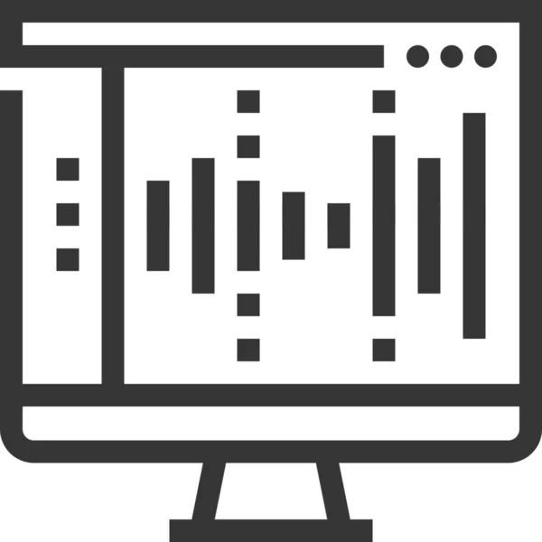
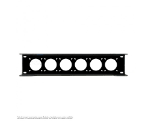
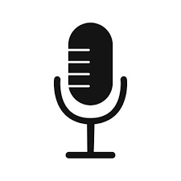
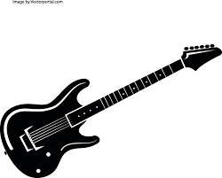
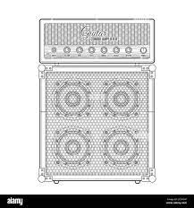

Equipment
 DAW and Software
- Studio One 4
- Slate Virtual Mix plugins
- Waves plugins
- Melodyne
 Hardware
- Audient ID14 Mk2 sound interface
- Behringer U-Phoria UMC1820 sound interface
- Behringer MIC2200 preamp
- Line 6 Helix Stomp
- Alesis NanoVerb 2 - Digital effects processor
Mics
- Rode Pod Mic - Dynamic mic
- 1x Shure sm57 - Dynamic mic
- 2x Shure sm58 - Dynamic mic
- Pyle PDKM7 drum kit mics
- Behringer C1 - Condenser mic
- 2x Behringer C2 . Condenser mic
Monitoring
- 2x Presonus Eris E35
- 2x Active bi-amp Studiosphares
- Audio-Technica ATH-M50x Headphones
- Sony MDR-CD270 Headphones
Instruments
- Millenium MPS-750 E-Drum kit
- Novation Launchkey 25 Keyboard
- Schecter Guitar
- Yamaha Guitar
- Jackson Dinky Guitar
- Gear 4 music Bass
Amps/Cabs
- Boss Katana 100 Mk2 Head
- Diy Marshall Cab
- Tourque T50 SL Bass amp
- Diy Bass Cab with 15 inch speaker